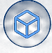

业务识别
识别业务场景，明确价值目标与边界
AI DELIVERY
把 AI 能力推进到业务可验收交付
 AI 应用能力
RAG、Agent、OCR 方案设计
AI 应用能力
RAG、Agent、OCR 方案设计识别业务场景，明确价值目标与边界
定义 RAG / Agent / 工作流方案，确定实现路径与交付计划
快速构建原型，验证关键流程，打磨 MVP 与验收要点

开发集成、数据接入、部署上线，保障系统稳定可用
测试验收、培训交付、复盘总结，沉淀可复用资产
 企业级 RAG 知识资产平台
知识管理 · RAG 检索 · 权限体系 · 可观测
产品定义
企业级 RAG 知识资产平台
知识管理 · RAG 检索 · 权限体系 · 可观测
产品定义
 多 Agent 协作产品
多 Agent 编排 · 工具调用 · 任务拆解 · 协作闭环
技术方案
多 Agent 协作产品
多 Agent 编排 · 工具调用 · 任务拆解 · 协作闭环
技术方案
 宠物店小程序
会员管理 · 商品服务 · 营销活动 · 数据看板
小程序
宠物店小程序
会员管理 · 商品服务 · 营销活动 · 数据看板
小程序
 Coze 视频优化工作流
脚本生成 · 自动剪辑 · 批量处理 · 质量评估
多模态内容
AI 项目
探索 AI 产品与解决方案
政企交付
政企项目经验与交付成果
Coze 视频优化工作流
脚本生成 · 自动剪辑 · 批量处理 · 质量评估
多模态内容
AI 项目
探索 AI 产品与解决方案
政企交付
政企项目经验与交付成果